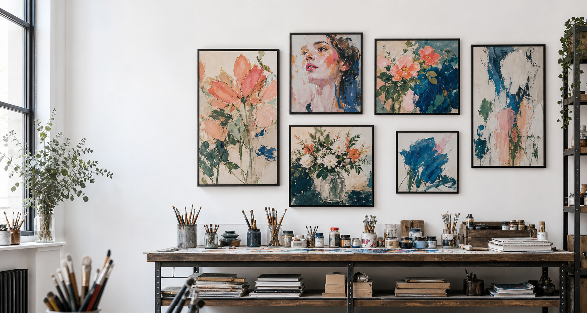

Objects, florals, portrait language, and studio views.
Maryilu Art Portfolio
Selected paintings, handmade visual stories, and studio studies by Maria Luisa, gathered as a quiet archive of color, memory, and handmade detail.
- Studio-made in Mallorca
- Process on Instagram
- Paintings and objects

Color, detail, and finish stay visibly studio-led.
Visitors can open the public feed while automatic sync is being connected.
Selected studies
A compact selection of Maria Luisa’s studio language: color, memory, florals, portraits, and painted objects.
Poetry and process notes
Fragments, written details, and studio thoughts can live beside the visual archive when Maria is ready to publish them.
How the studio feels
Each piece begins with a mood, a person, a color memory, or a small object that refuses to be ordinary.
Gather
Images, colors, text, songs, keepsakes, and emotional details.
Compose
Shapes, symbols, and color are arranged until the piece feels personal.
Finish
Texture, line, shine, and softness are finished by hand.
About Maria Luisa
Maria Luisa Matees creates expressive paintings and handmade pieces under the Maryilu name. Her work is personal, colorful, and emotionally specific: the kind of art that wants to remember someone properly.
This page keeps the broader art practice visible. Custom gift commissions live on the main Maryilu store.
Public studio feed
Recent public posts become visible here after Instagram sync. Until then, the portfolio stays focused on curated work and a direct Instagram link.